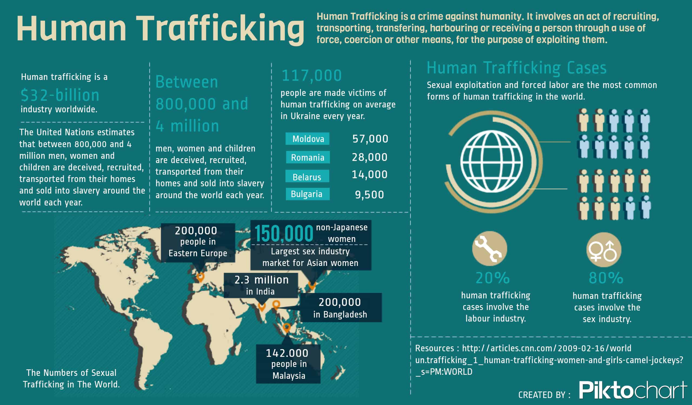

STATISTICS

Based on data gathered from 155 countries, it offers the first global assessment of the scope of human trafficking and what is being done to fight it. It includes: an overview of trafficking patterns; legal steps taken in response; and country-specific information on reported cases of trafficking in persons, victims, and prosecutions.
At the launch of the Report in New York, the Executive Director of UNODC, Antonio Maria Costa said that "many governments are still in denial. There is even neglect when it comes to either reporting on, or prosecuting cases of human trafficking". He pointed to the fact that while the number of convictions for human trafficking is increasing, two out of every five countries covered by the UNODC Report had not recorded a single conviction.
According to the Report, the most common form of human trafficking (79%) is sexual exploitation. The victims of sexual exploitation are predominantly women and girls. Surprisingly, in 30% of the countries which provided information on the gender of traffickers, women make up the largest proportion of traffickers. In some parts of the world, women trafficking women is the norm.
The second most common form of human trafficking is forced labour (18%), although this may be a misrepresentation because forced labour is less frequently detected and reported than trafficking for sexual exploitation.
Worldwide, almost 20% of all trafficking victims are children. However, in some parts of Africa and the Mekong region, children are the majority (up to 100% in parts of West Africa).
Although trafficking seems to imply people moving across continents, most exploitation takes place close to home. Data show intra-regional and domestic trafficking are the major forms of trafficking in persons.
The United Nations Protocol against Trafficking in Persons - the foremost international agreement in this area - entered into force in 2003. The Report shows that in the past few years the number of Member States seriously implementing the Protocol has more than doubled (from 54 to 125 out of the 155 States covered). However, there are still many countries that lack the necessary legal instruments or political will.
"This Report increases our understanding of modern slave markets, yet it also exposes our ignorance", said Mr. Costa. "We have a big picture, but it is impressionistic and lacks depth. We fear the problem is getting worse, but we can not prove it for lack of data, and many governments are obstructing", he admitted. The head of UNODC therefore called on governments and social scientists to improve information-gathering and -sharing on human trafficking. "If we do not overcome this knowledge crisis we will be fighting the problem blindfolded", he warned.
In a Panel Discussion on "Exposing Denial and Benign Neglect", Mr. Costa called on governments, the private sector, and the public at large to step up the fight against trafficking in persons. "More must be done to reduce the vulnerability of victims, increase the risks to traffickers, and lower demand for the goods and services of modern-day slaves", he said.
To increase public awareness of human trafficking and rally the world to fight it, Mr. Costa appointed Academy Award-winning actress Mira Sorvino as a Goodwill Ambassador to Combat Human Trafficking. "We know that Mira's commitment to the plight of trafficking victims will move people to take action against modern-day slavery", said the Executive Director of UNODC.